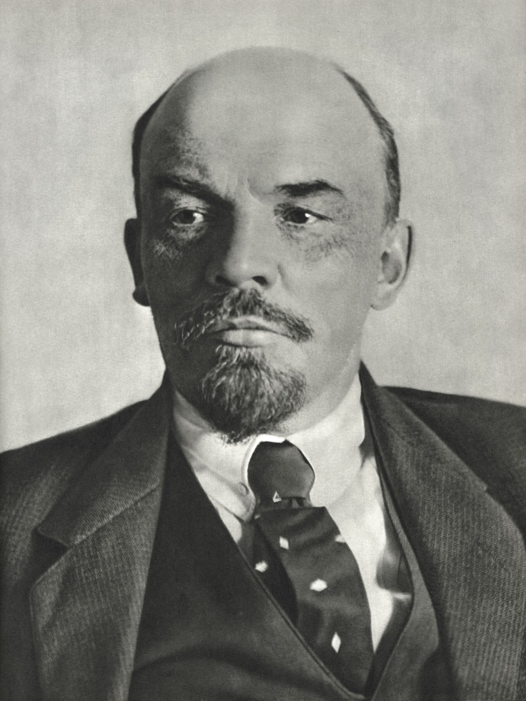
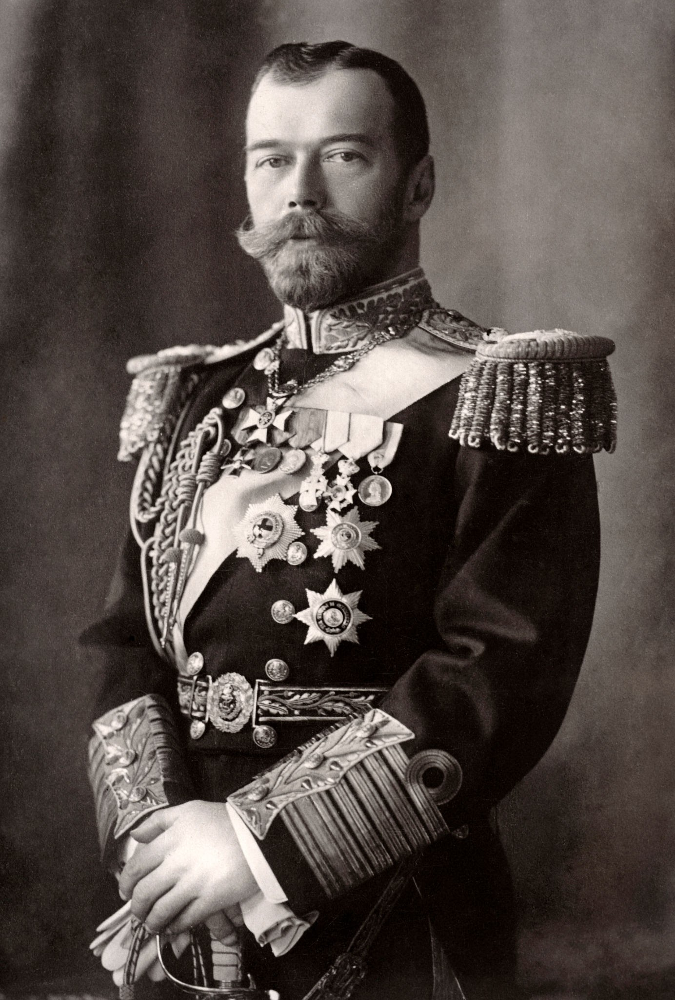
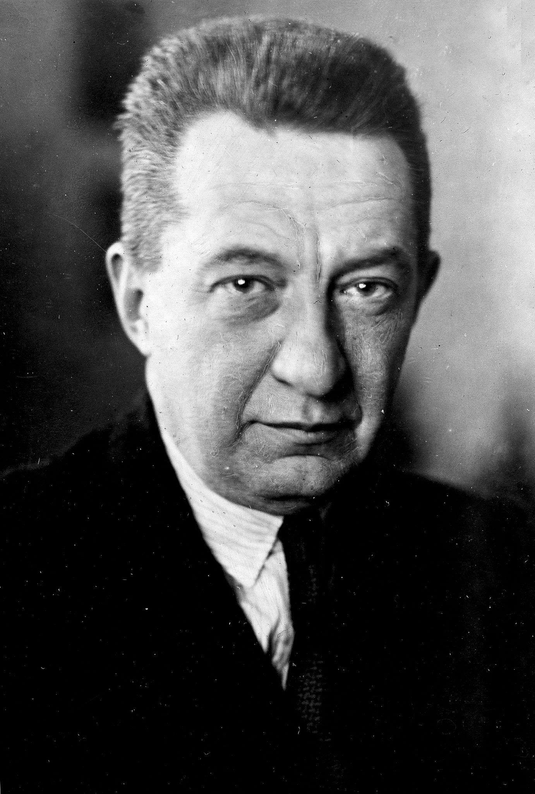
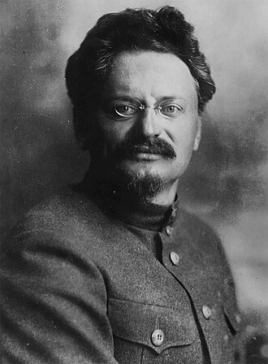
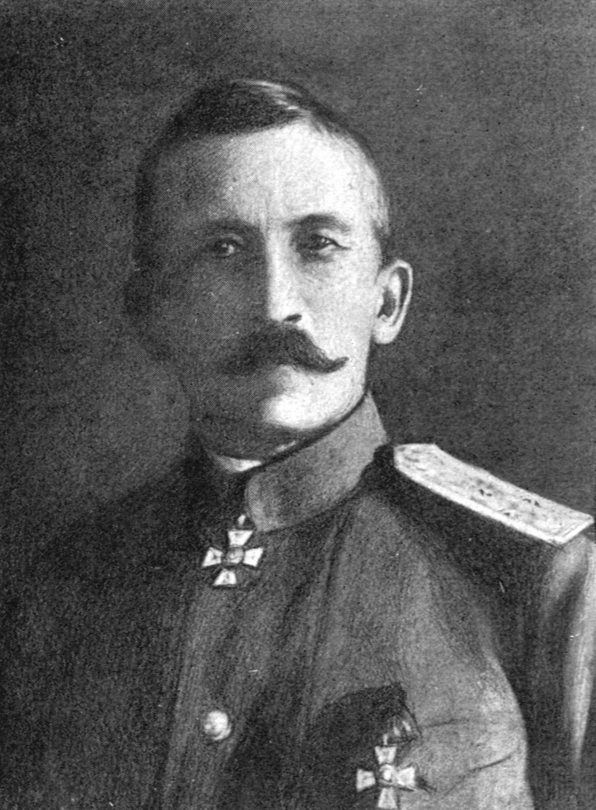
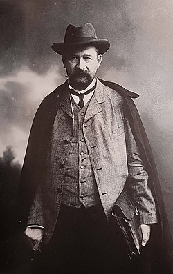

Интерактивная цифровая хронология, посвящённая ключевым событиям революционного 1917 года. Проект объединяет историю России, современный веб-дизайн и интерактивные элементы.
Ключевых событий
Исторических личностей
Лет правления Романовых
Переломный год истории
Проект посвящён ключевым событиям революционного 1917 года: Февральской революции, политическим кризисам периода двоевластия и Октябрьской революции.
Падение самодержавия, отречение Николая II и создание Временного правительства.
Период двоевластия, апрельский, июльский и корниловский кризисы.
Вооружённое восстание, штурм Зимнего дворца и приход большевиков к власти.
Главные события революционного 1917 года в хронологическом порядке.
Политические деятели, оказавшие влияние на ход революционных событий 1917 года.

Лидер большевиков и один из главных организаторов Октябрьской революции. Выступал за передачу власти Советам, выход России из войны и построение социалистического государства.

Последний российский император. Во время революции 1917 года отрёкся от престола, что привело к падению монархии и завершению правления династии Романовых.

Глава Временного правительства в период политического кризиса 1917 года. Пытался сохранить демократический строй, однако не смог стабилизировать ситуацию в стране.

Один из лидеров большевиков и председатель Петроградского Совета. Играл важную роль в подготовке и организации Октябрьского вооружённого восстания.

Русский генерал, предпринявший попытку установления военной диктатуры в августе 1917 года. Корниловский мятеж завершился провалом и усилил позиции большевиков.

Первый председатель Временного правительства после Февральской революции. Поддерживал либеральные реформы и выступал за демократические преобразования.
«Революция — это бурное изменение истории, в котором рушатся старые порядки и формируется новое общество»
— историческое осмысление событий 1917 года
1. История России XX века
2. Суханов Н. Н. «Записки о революции»
3. Рабинович А. «Большевики приходят к власти»
4. Richard Pipes — The Russian Revolution
5. Большая российская энциклопедия